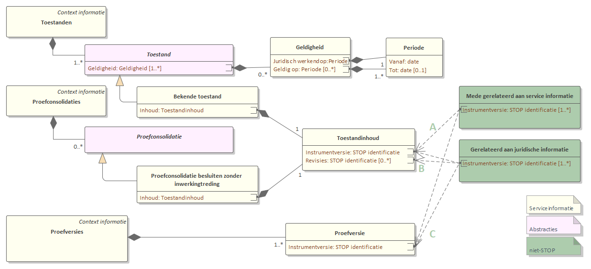

Scenario: na consolidatie
Samenhang tussen regelgeving en gerelateerde informatie
Kern van de synchronisatie in dit scenario is dat voor toestanden waarvan de inhoud bekend is, de relatie tussen de regelgeving en de regelgeving-gerelateerde informatie vastgelegd wordt op basis van de unieke identificatie van de versie van de regeling en/of informatieobject. Dezelfde regelgeving-gerelateerde informatie kan gerelateerd zijn aan meerdere versies.
Regelgeving-gerelateerde informatie hoort bij de inhoud van een toestand van een geconsolideerde regeling:
Indien de regelgeving-gerelateerde informatie uitsluitend juridische informatie betreft (B in onderstaand diagram): als de Instrumentversie van de informatie gelijk is aan ofwel de Instrumentversie ofwel een van de Revisies van de Toestanden.
Indien de regelgeving-gerelateerde informatie uitsluitend juridische informatie betreft (A in onderstaand diagram): als de Instrumentversie van de informatie gelijk is aan de Instrumentversie van de Toestanden, want dat is de meest recente revisie.
Voor de consolidatie van een besluit (C) moet de Instrumentversie van de informatie overeenkomen met de Instrumentversie van de Proefversies

Reactieve toepassing
In dit scenario wordt de regelgeving-gerelateerde informatie aangepast na de beschikbaarstelling van de geconsolideerde regelgeving. Bij elke verandering van (de inhoud van) de geconsolideerde regelgeving dient nagegaan te worden of en hoe de regelgeving-gerelateerde informatie aangepast dient te worden. Dit scenario kan toegepast worden als er geen voorkennis aanwezig is over nieuwe regelgeving die bij het bevoegd gezag in voorbereiding is, of als het aanpassen van de regelgeving-gerelateerde informatie geen urgentie heeft.
De synchronisatie verloopt als volgt:
Het scenario start als er een nieuwe module (Toestanden, zie voorbeeld) of Proefversies, zie voorbeeld) beschikbaar komt voor de regeling of het informatieobject.
Daaruit worden de relevante toestanden geselecteerd die een inhoud hebben. Het gaat dus om Toestanden voor in werking getreden regelgeving en Proefversies voor regelgeving uit ontwerpbesluiten.
Voor de inhoud van elke toestand wordt nagegaan of er al eerder gerelateerde regelgeving is opgesteld. Zo niet, dan gebeurt dat op dit moment. Hierbij moet rekening gehouden worden met de mogelijkheid dat dezelfde inhoud al eerder onderdeel was van een proefversie of andere toestand (zie voorbeeld).
Indien gewenst wordt informatie van de toestand overgenomen, bijvoorbeeld de geldigheidsinformatie.
Proactieve toepassing
Het scenario kan ook proactief worden toegepast, waarbij de regelgeving-gerelateerde informatie al opgesteld wordt voordat een besluit (of ander bericht dat de consolidatie beïnvloedt) aan de LVBB verzonden wordt. Na de beschikbaarstelling van de geconsolideerde regelgeving wordt de relatie gelegd met de geconsolideerde regelgeving waar de informatie bijhoort.
De synchronisatie verloopt als volgt:
Het scenario start bij het opstellen van een nieuwe versie van regelgeving. De gerelateerde informatie wordt geassocieerd met die versie van de regelgeving. Als dat hand in hand gaat en de regelgeving wordt aangepast, moet de gerelateerde informatie opnieuw met de (gewijzigde) versie van regelgeving geassocieerd worden.
De regelgeving wordt opgenomen in een besluit of is onderdeel van een bericht dat aan de LVBB zal worden gestuurd. In het geval van een besluit kan als onderdeel van het besluitvormingsproces de regelgeving geamendeerd worden (dus stap 1 en 2 worden herhaald, zie voorbeeld).
Bij aanlevering aan de LVBB wordt de regelgeving verwerkt in de geconsolideerde regelgeving. Als de LVBB niet in staat is de inhoud van een toestand te bepalen, dan wordt dat gemeld. Het oplossen van de consolidatieproblemen leidt tot een herhaling van stap 1 t/m 3.
De LVBB stelt een nieuwe module Toestanden beschikbaar.
De versie van de regelgeving waarmee de gerelateerde informatie is geassocieerd wordt teruggevonden als inhoud van een toestand. Indien gewenst wordt informatie van de toestand overgenomen, bijvoorbeeld de geldigheidsinformatie.
Dit scenario is een goede optie als de regelgeving-gerelateerde informatie samenhangt met het overgrote deel van de geassocieerde regeling of informatieobject. In dat geval zal vrijwel elke wijziging in de regelgeving samengaan met een aanpassing van de regelgeving-gerelateerde informatie. Dit is in het bijzonder het geval als informatieobjecten afgeleid worden uit de regelgeving-gerelateerde informatie.
Zeker bij informatie die gerelateerd is aan (de tekst van) een regeling zal er meer informatie in de regeling besloten liggen dan in de regelgeving-gerelateerde informatie. Het zal dan vaak voorkomen dat een regeling wordt aangepast zonder dat aanpassing van de regelgeving-gerelateerde informatie nodig is. In die gevallen leidt dit scenario tot zeer regelmatige aanpassing van de lijst met instrumentversies waarmee de gerelateerde informatie is geassocieerd. Het dan is praktischer om een van de andere scenario's te kiezen waarbij aanpassingen aan de regelgeving en regelgeving-gerelateerde informatie meer ontkoppeld zijn.
In dit scenario wordt effectief de gerelateerde informatie beheerd als onderdeel van de regeling of het informatieobject. Op basis van alleen de STOP-informatie in dit scenario kan bijvoorbeeld samenloop niet gedetecteerd worden (zie voorbeeld. Die detectie vindt plaats bij de consolidatie van de regelgeving; bij het oplossen ervan zal bevoegd gezag ook (moeten) kijken wat de consequenties voor de gerelateerde informatie zijn. Voor gerelateerde informatie die ook los van regelgeving beheerd wordt, bijvoorbeeld omdat het de bron is waarop de regelgeving is gebaseerd, is synchronisatie bij regelgeving meer geschikt.
Informatie gerelateerd aan meerdere regelingen en/of informatieobjecten
Het synchronisatiemechanisme kan uitgebreid worden naar gerelateerde informatie die samenhangt met meerdere regelingen en/of informatieobjecten. Bijvoorbeeld als een deel van de informatie (zoals een waarde voor een norm) in de tekst staat en een deel (werkingsgebied) in een informatieobject. Het is niet voldoende om in dat geval alleen een associatie met de tekst vast te leggen. Het is de gewoonte om dynamisch (zonder versieaanduiding) van de regelingtekst naar het informatieobject te verwijzen. Als bijvoorbeeld het werkingsgebied aangepast moet worden, dan is het juridisch voldoende om alleen het informatieobject te wijzigen; de tekst van de regeling kan ongewijzigd blijven. De gerelateerde informatie moet daarom geassocieerd zijn met de versies van alle betrokken regelingen en informatieobjecten.